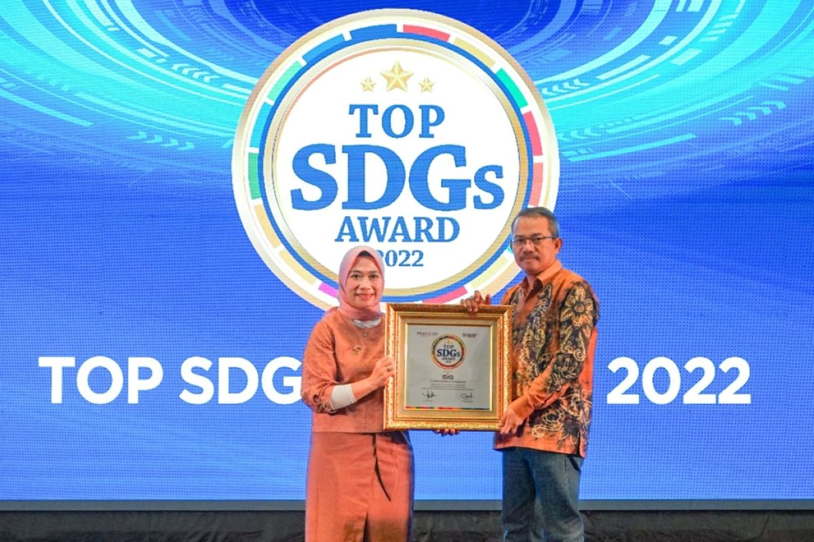
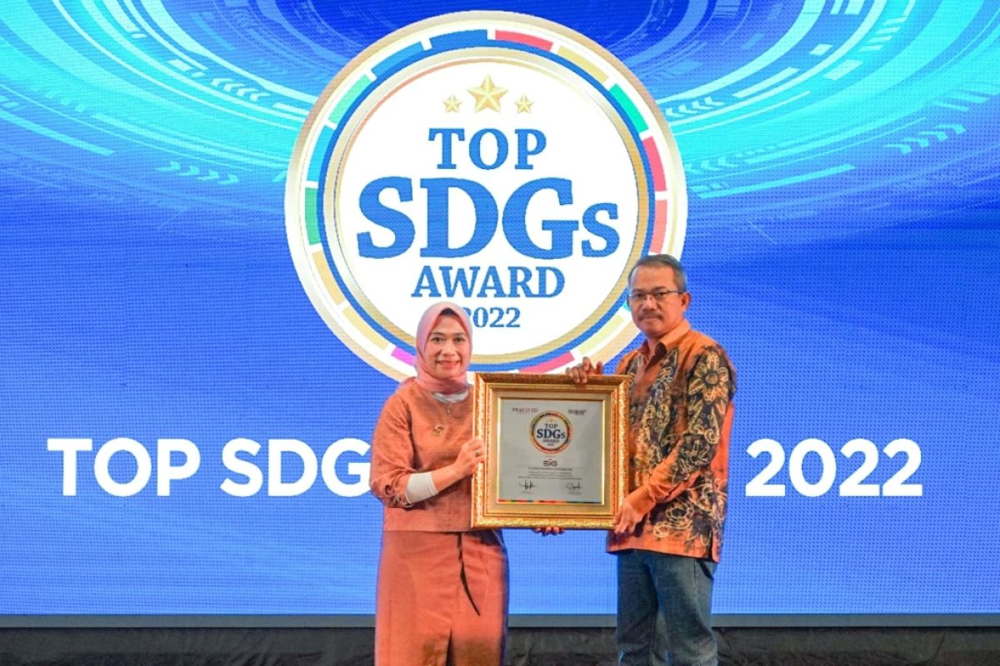
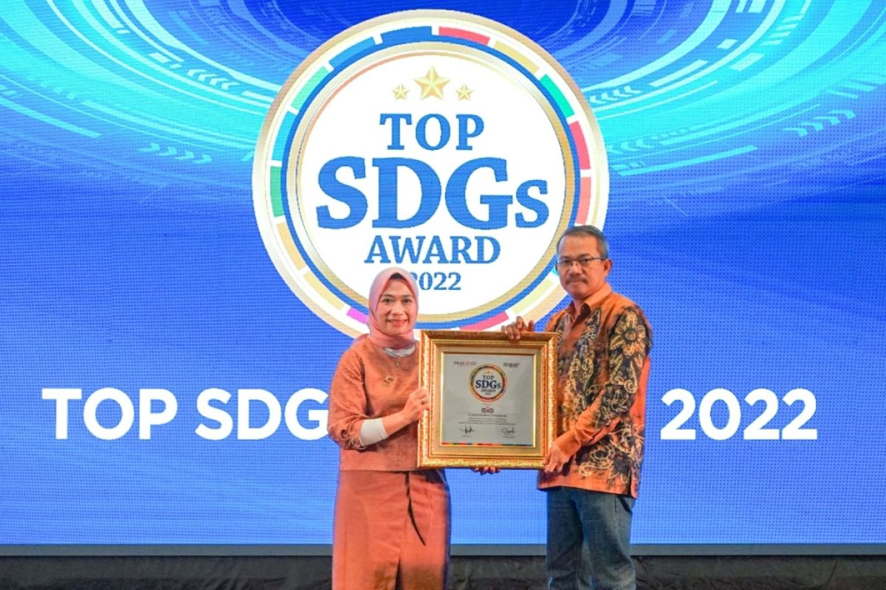

SDGs merupakan komitmen global untuk menciptakan dunia yang lebih baik dan berkelanjutan. Melalui kerja sama internasional dan upaya kolektif, tujuan-tujuan ini diharapkan dapat tercapai demi kesejahteraan generasi sekarang dan yang akan datang. SDGs juga merupakan agenda 2030 yang merupakan kesepakatan pembangunan berkelanjutan berdasarkan hak asasi manusia dan kesetaraan. SDGs berprinsip Universal, Integrasi dan Inklusif, untuk meyakinkan bahwa tidak ada satupun yang tertinggal atau disebut. Sasaran Global menurut Perpres - Nomor - 111 - Tahun - 2022 yaitu, Mengakhiri segala bentuk diskriminasi terhadap kaum perempuan di mana pun.
SDGs terdiri dari 17 tujuan utama adalah, Tanpa Kemiskinan, Tanpa Kelaparan, Kehidupan Sehat dan Sejahtera, Pendidikan Berkualitas, Kesetaraan Gender, Air Bersih dan Sanitasi Layak, Energi Bersih dan Terjangkau, Pekerjaan Layak dan Pertumbuhan Ekonomi, Industri, Inovasi dan Infrastruktur, Berkurangnya Kesenjangan, Kota dan Permukiman Yang Berkelanjutan, Konsumsi dan Produksi Yang Bertanggung Jawab, Penanganan Perubahan Iklim, Ekosistem Lautan, Ekosistem Daratan, Perdamaian, Keadilan dan Kelembagaan Yang Tangguh, Kemitraan Untuk Mencapai Tujuan.
Kesetaraan gender adalah Tujuan ke-5 dalam Tujuan Pembangunan Berkelanjutan (SDGs), yang bertujuan untuk mencapai kesetaraan gender dan memberdayakan semua perempuan dan anak perempuan. Tujuan ini berkomitmen untuk menghapuskan diskriminasi, kekerasan, dan ketidakadilan berbasis gender, serta memastikan hak-hak perempuan di berbagai aspek kehidupan.Kesetaraan gender adalah dasar penting untuk mencapai tujuan pembangunan lainnya. Ketika perempuan diberdayakan, mereka dapat berkontribusi lebih besar terhadap keluarga, komunitas, dan ekonomi, menciptakan masyarakat yang lebih adil dan sejahtera.
Isu kekerasan terhadap perempuan dan anak perempuan ini penting, tidak hanya karena masalah kesehatan moral atau masalah masyarakat yang ditimbulkan, tapi juga karena ancaman kekerasan domestik yang membuat gerakan dan tindakan perempuan terbatas di dalam rumah sehingga membatasi pilihan hidup mereka. Global Burden of Disease mengestimasi bahwa lebih dari 30% perempuan >15 tahun mendapat pelecehan fisik atau seksual dari pasangannya selama masa hidup mereka. Mengetahui insiden dan prevalensi kekerasan menjadi langkah awal untuk memastikan kebijakan pencegahan tepat sasaran.
Isu prnikahan anak, pernikahan paksa, dan mutilasi alat kelamin perempuan (female genital mutilation - FGM) masih menjadi masalah di beberapa negara. Praktik-praktik ini melanggar hak asasi manusia dan menghalangi akses anak perempuan ke pendidikan, kesehatan, dan peluang ekonomi.